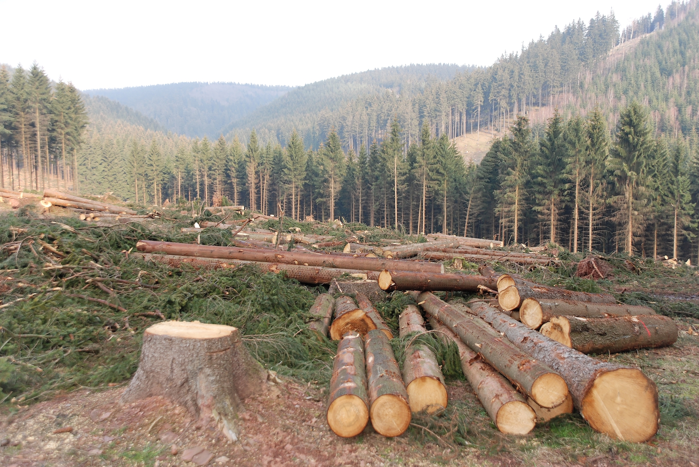

What is Deforestation?
Deforestation refers to the large-scale removal of forests, often resulting in permanent loss of tree cover to make way for agriculture, urban expansion, mining, or infrastructure. While it can occur naturally through wildfires or disease, the vast majority is driven by human activities.
Forests currently cover about 31% of the Earth’s land surface, but we are losing them at an alarming rate. Each year, the planet loses more than 10 million hectares of forest — an area roughly the size of Portugal. Over the past 30 years, we've lost more than 420 million hectares globally, much of it in tropical regions.
Why Does It Matter?
- Climate Regulation: Forests act as carbon sinks, absorbing vast amounts of carbon dioxide and helping to mitigate climate change. Deforestation contributes to nearly 10–15% of global greenhouse gas emissions.
- Biodiversity: More than 80% of all terrestrial species live in forests. Habitat destruction puts countless plants and animals at risk of extinction.
- Water Cycle: Forests play a crucial role in maintaining the water cycle. Removing them disrupts rainfall patterns and can lead to drought or flooding.
- Soil Protection: Tree roots bind the soil together, preventing erosion. Without forests, fertile soil can be washed away, reducing land productivity.
- Human Impact: Over 1.6 billion people, including many Indigenous communities, depend directly on forests for food, shelter, medicine, and livelihoods.
Deforestation isn’t just an environmental issue—it’s a social, economic, and global crisis. By understanding its causes and consequences, we can take meaningful steps toward sustainable solutions and forest conservation.
Explore the rest of our site to learn more about the causes, effects, and how you can take action against deforestation.